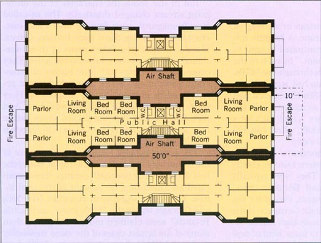

Tenements, Disease, and the Birth of Public Health
How density, poverty, and infrastructure turned cities into biological experiments
The Biological Reality of Urbanization
🔑 Key Concept
Urbanization did not just reorganize work and culture.
It reorganized life, death, and the body.
Nineteenth-century cities were not merely crowded—they were toxic environments.
Part I
The Tenement City: Density Without Infrastructure
When people arrive faster than cities can adapt
The Basic Problem
People arrived faster than cities could adapt.
Explosive population growth in New York, Chicago, Boston, Philadelphia
Housing built for profit, not safety
Working-class and immigrant families crowded into subdivided apartments
Key Features of Tenement Life
Entire families in one room
Basement apartments prone to flooding
Poor ventilation and little natural light
Shared privies, often unsanitary and unconnected to sewers
Multiple families sharing single water sources
×
Living Density in Tenements
Imagine this: a family of 6-8 people living in a single room, perhaps 10 feet by 12 feet. That room served as:
Bedroom for all family members
Kitchen and dining area
Workspace (home manufacturing like sewing)
Living space
Privacy was impossible. Bathing, dressing, sleeping, eating, working—all happened in the same small space.
Disease spread easily. When one person got sick (tuberculosis, influenza, typhoid), everyone in the room was exposed constantly.
Statistics: By the 1890s, parts of New York's Lower East Side had population densities of 300,000+ people per square mile—higher than Bombay or Calcutta.
The Reality Inside Tenements
Little or no ventilation—windows opened to narrow air shafts
Whole families living in a single room
Many trapped in basement apartments
Inadequate privies: less than 6 feet from buildings, not connected to sewers
×
Basement Apartments: The Worst Housing
Basement apartments were below street level—the cheapest, most dangerous housing available.
The Conditions:
Walls covered in slime, sewage, and moisture—constantly damp from groundwater seepage
Regular sewage flooding—when privies overflowed or heavy rains came, basements filled with waste
No natural light—small windows at street level, if any
Disease incubators—tuberculosis, typhoid, cholera thrived in these conditions
Example:
A two-story tenement building housing 102 people with only one privy. Imagine 102 people sharing a single outdoor toilet that's not connected to a sewer system.
🔑 The Scale of Squalor
Example: A two-story building with 102 residents sharing one privy.
Filth of the City
19th-century cities were literally stinking, filthy places.
Urban sanitation: water and a broom—if that
Chamber pots dumped in streets; cesspits overflowed
In the mid-1800s, thousands of pigs roamed city streets—especially in New York, where they were considered a form of garbage disposal.
Why Pigs?
Free garbage removal: Pigs ate organic waste dumped in streets
Poor people's livestock: Immigrants (especially Irish) kept pigs for food
No regulations: Until the 1860s, cities had no effective way to stop people from keeping pigs
The Problems:
Pigs created more filth than they consumed
They spread disease
They made streets dangerous and disgusting
Middle-class reformers saw them as symbols of poverty and disorder
The Conflict:
Efforts to remove pigs from streets became a class conflict. Poor people depended on pigs for food; middle-class reformers wanted "civilized" cities. Pig removal was part of imposing middle-class standards of cleanliness and order on working-class neighborhoods.
The Dumbbell Tenement
A classic example of reform without enforcement.

The First Attempt at Housing Regulation
By 1865, New York faced a housing crisis:
More than 500,000 people living in 15,000 tenements
James Ware's dumbbell design became standard under New York's first tenement law:
Regulated space between apartments
Required minimal ventilation (air shafts)
Mandated fire escapes
Critical Point
🔑 Why Tenements Were Dangerous
Tenements were dangerous not because of ignorance alone, but because landlords prioritized profit over health.
Structural inequality produced structural disease.
Part II
Filth, Waste, and the Ecology of the City
From housing to infrastructure
The Reality of Urban Sanitation
Chamber pots dumped into streets
Privy vaults leaching into groundwater
Manure piles from horses (thousands per day)
Dead animals, industrial offal, and garbage accumulating in public spaces
No coordinated waste removal
×
Privy Vaults and Contamination
A privy vault was essentially an outdoor toilet—a hole in the ground (often lined with brick or wood) where human waste accumulated.
The Problem:
Overflow: When full, waste backed up and spilled into streets and basements
Leaching: Waste seeped through soil into groundwater
Wells contaminated: Drinking water wells were often just feet away from privies
No sewers: Most cities didn't have sewer systems until late 1800s
Disease Connection:
Cholera, typhoid, and dysentery are all waterborne diseases. When privies contaminated wells and water pumps, entire neighborhoods got sick. This was the primary disease vector in 19th century cities.
The Failure of Urban Sanitation
The Problems:
No coordinated waste removal
Street cleaning as political patronage
Rivers used for both drinking water AND sewage disposal
Private contractors unreliable
The Reality:
Wealthy neighborhoods cleaner
Poor neighborhoods ignored
Disease concentrated in tenement districts
Inequality visible in mortality rates
Cities as Ecological Systems
🔑 Key Concept: Urban Ecology
Cities are interconnected systems of waste, water, bodies, and microbes.
Filth was not accidental—it was structurally produced by rapid urban growth without planning.
×
Urban Ecology
Think of the city as an ecosystem where everything is connected:
Water flows: From source → pipes/wells → homes → waste → rivers → back to source
Bodies interact: Thousands of people in close contact = rapid disease transmission
The Result: A self-reinforcing cycle where density + filth + contaminated water = epidemic disease.
Part III
Disease Before Germ Theory: Miasma and Moral Judgment
How people understood sickness before modern medicine
The Dominant Belief: Miasma Theory
Miasma theory held that disease was caused by "bad air" from rotting filth.
Most doctors believed disease caused by rotting filth—the miasma
Focus on smell rather than microbes
Disease spreads through poisonous vapors
Solution: ventilation, drainage, removing filth
🔑 The Problem
Belief in sanitation existed—but implementation failed completely.
×
Miasma Theory
From ancient times through the mid-1800s, most people believed disease was caused by "miasma"—bad air or poisonous vapors rising from rotting organic matter.
Core Beliefs:
Decay produces poisonous gases
These vapors cause illness when inhaled
Strong odors = dangerous miasma
Night air is especially dangerous (vapors settle)
What They Got Right:
Miasma theory was WRONG about the mechanism (it's not bad air, it's bacteria and viruses), but it led to some correct interventions: cleaning streets, improving drainage, removing garbage, building sewers. These things DID reduce disease, just not for the reasons people thought.
What They Got Wrong:
Miasma theory couldn't explain contagion (person-to-person transmission), couldn't identify disease-causing organisms, and led to moral judgments about the sick.
Why Sanitation Remained Ineffective
Despite belief in miasma, cities stayed filthy:
Street cleaning as sinecure: Jobs given as political favors; workers didn't perform duties
Corruption and incompetence
Filth thrown into streets, piled up, or dumped in rivers
🔑 Jacksonian-Era Ideology
Plumbing and sewerage remained private responsibilities.
Americans resisted taxation and municipal regulation—even as cities became breeding grounds for epidemic disease.
Disease as Moral Judgment
Miasma theory had social consequences:
Disease seen as punishment for vice, intemperance, or filthiness
Poor, immigrants, and African Americans blamed for illness
Cholera deaths viewed as suspicious or deserved
Calls for prayer and fasting during epidemics
🔑 Critical Point
Disease explanations reinforced existing class and racial hierarchies.
Interlude
Indoor Plumbing: A Double-Edged Sword
Technology without infrastructure creates new problems
The Arrival of Indoor Plumbing
Water-closets (indoor toilets) appeared slowly and unevenly:
Colonial EraIndoor water-closets unknown
Late 1700sAppear in Philadelphia—but don't catch on
Mid-1800sIncreasingly common in middle and upper-class homes
🔑 Why Slow Adoption?
Early water-closets were smelly, noisy, and difficult to clean.
Central Waterworks Expand
Between 1840-1870, cities built central waterworks:
Aqueducts and reservoirs built to supply cities
Initially not intended for domestic consumption
Purpose: fire protection, street cleaning, industrial use
×
Central Waterworks
Central waterworks were systems that brought water from distant sources (rivers, lakes, springs) into cities through aqueducts and distributed it through pipes.
Major Examples:
Philadelphia (1801): First major American waterworks, drawing from Schuylkill River
New York (1842): Croton Aqueduct, bringing water 41 miles from Westchester County
Boston (1848): Lake Cochituate system
Original Purpose:
These systems were built primarily for fire protection—cities had experienced devastating fires. Domestic drinking water was a secondary consideration. Many people continued using private wells and cisterns for years.
💭 The Irony
Convenience, not hygiene, drove adoption.
The connection between hygiene and disease was not understood.
The Fatal Disconnect
Many homes had plumbing without connection to sewers:
Water In:
Private wells
Rainwater cisterns
Sometimes central waterworks
Waste Out:
Cesspits in basements
Cesspits in backyards
No sewer connection
When Plumbing Makes Things Worse
Increased water usage created new problems:
Cesspits overflowed and flooded into streets
Faulty pipes leaked sewer gas into homes
Wells contaminated by nearby cesspits
No understanding of how disease spread through water
×
Cesspit Overflow Crisis
The introduction of indoor plumbing dramatically increased water usage—people flushed toilets, took baths, washed dishes with running water. This created far more wastewater than the old privy system.
The Result:
Cesspits couldn't handle the volume: They were designed for minimal waste from occasional privy use, not constant water-closet flushing
Overflow became routine: Cesspits filled up quickly and spilled into streets, alleys, and basements
Contamination spread: Raw sewage flooded into public spaces and seeped into soil and groundwater
Disease exploded: Cholera, typhoid, and dysentery thrived in this environment
Sewer Gas:
Poorly designed pipes allowed "sewer gas" (methane and hydrogen sulfide from decomposing waste) to leak into homes. People believed this gas caused disease (via miasma theory)—and in a way they were right, because the gas indicated proximity to sewage that DID carry disease-causing bacteria.
🔑 The Paradox
"Modern" plumbing without sewers made cities more dangerous, not safer.
The Stage Is Set for Disaster
🔑 The Perfect Storm
By mid-century, American cities had:
Dense populations in tenements
Contaminated water supplies
Inadequate waste disposal
Increased water usage overwhelming systems
No understanding of waterborne disease
Enter cholera—the disease that would force Americans to rethink everything.
Part IV
Cholera: The Disease That Changed America
When epidemic forces reckoning
Why Cholera Matters
Cholera provides a lens for understanding the entire 19th century.
An unintended consequence of urbanization and mass migration
Responses reveal transformations in politics, religion, and medicine
Gave rise to sanitary reform and public health movements
Foreshadowed Progressive-era thinking
🔑 Historical Comparison
19th-century cholera = 14th-century plague
A New Disease Arrives
No evidence of cholera in the West before the 19th century.
Emerged from India, spread globally via imperialism and trade
Product of the transportation revolution
Americans initially believed they would be immune
Inspired more fear than any other disease
×
Transportation Revolution and Disease
Cholera became a pandemic disease because of 19th-century transportation improvements:
How Cholera Spread:
Steamships: Crossed oceans faster than disease incubation periods
Railroads: Moved infected people rapidly across continents
Canals: Connected waterways and populations
Immigrant ships: Crowded steerage conditions were perfect for transmission
The Irony:
The very technologies that Americans celebrated as "progress"—steamships, railroads, canals—also spread deadly disease faster than ever before. Modernity came with biological costs.
The Antebellum Cholera Epidemics
Two major outbreaks devastated American cities:
1832First cholera pandemic reaches America
1849Second cholera pandemic—even more deadly
📊 Death Toll Estimates
New York: 5,000 deaths
Chicago: 3,500 deaths (~5% of population)
Nationwide: 150,000 deaths estimated
"Bring Out Your Dead"
Cholera overwhelmed 19th-century cities:
Hospitals couldn't cope
Bodies couldn't be buried fast enough—corpses lay in streets
Buried in shallow potter's fields; rats consumed bodies
Dead animals created additional hazards
Cholera spread on immigrant barges and steamboats
×
The Hospital Crisis
When cholera struck, cities had no adequate hospital facilities.
The Problems:
NIMBYism: No one wanted a cholera hospital in their neighborhood
Improvised facilities: Public schools, warehouses, and sheds were converted
Horrific conditions: Witnesses described them as "little better than butcher shops"
Inadequate staff: Doctors and nurses fled or refused to work
No effective treatment: Most patients died regardless of care
Public Distrust:
Many people believed hospitals were more dangerous than staying home. They feared doctors would experiment on the sick or steal bodies. This distrust had some basis—medical knowledge was primitive and treatments often harmful.
💀 The Reality
In some outbreaks, 10-50% of city populations died.
Cholera as "God's Justice"
Many Americans interpreted cholera in religious terms:
Divine punishment for sin—like the Biblical flood
Blamed on intemperance, impudence, filthiness
Cholera often struck prostitutes, drunks, the poor
Dying of cholera carried social suspicion
🔑 Government Response
Governments proclaimed Days of Prayer and Fasting.
Cholera as "Man's Injustice"
Others drew the opposite conclusion:
🔑 The Radical Argument
Cholera exposed the depth of poverty and misery in American cities.
Worst sufferers: African Americans and Irish immigrants
To prevent future epidemics, address structural causes:
Poverty
Ignorance
Urban living conditions
This thinking fed into later reform movements
The Medical Profession in Crisis
Doctors in the 19th century were not highly respected:
Medical schools admitted anyone who could pay
Doctors could cure very few diseases
Treatments often worse than the illness
Grave robbing scandals damaged reputation
×
Grave Robbing and "Resurrectionists"
Medical schools needed bodies for anatomical study, but obtaining legal cadavers was difficult.
The Practice:
"Resurrectionists": People who dug up fresh graves and sold bodies to medical schools
Night raids: Graves robbed within days of burial
Targeted cemeteries: Pauper and African American cemeteries especially vulnerable
Public Outrage:
Families guarded graves for weeks after burial
Some cemeteries built watchtowers
Scandals like the Burke and Hare murders (Scotland, 1828) made international news
People believed doctors would let patients die to obtain bodies
Result: Deep public distrust of the medical profession.
💀 Cholera Made It Worse
Doctors were unable to prevent or cure cholera—further damaging medicine's reputation.
Medical "Treatments" for Cholera
Doctors relied on pre-disposing causes and miasma theory:
Bloodletting
Laudanum (opium tincture)
Tobacco smoke enemas
Plugging the rectum with beeswax or oilcloth
×
19th Century Cholera Treatments
Without understanding cholera's actual cause (bacteria in contaminated water), doctors tried treatments based on mistaken theories:
Common Treatments:
Bloodletting: Draining blood to "rebalance humors"—weakened already dehydrated patients
Laudanum: Opium tincture to stop diarrhea—suppressed symptoms but didn't cure disease
Tobacco smoke enemas: Blown into rectum to "stimulate" the body—completely useless
Rectal plugs: Beeswax or oilcloth to physically stop diarrhea—prevented fluid loss but caused toxic buildup
Calomel: Mercury compound as a purgative—poisoned patients
Hot mustard baths: To "sweat out" disease—dehydrated patients further
Why They Failed:
Cholera kills through severe dehydration from diarrhea and vomiting. The ONLY effective treatment is fluid replacement (oral or IV rehydration). But 19th-century doctors didn't understand this. Their treatments often made dehydration worse or added new dangers (mercury poisoning, infection).
💀 The Result
These treatments often harmed patients more than they helped.
Quacks and Patent Medicines
With little faith in doctors, people turned to alternatives:
Quacks and home remedies flourished
Newspapers printed "cholera cures"
Drug stores distributed handbills
"Cholera-specific" patent medicines quickly produced and sold
💰 The Marketplace of Fear
Epidemic created a booming market for dubious cures.
Part IV
Cholera: The Classic Urban Disease
Using epidemic as a lens for understanding inequality
Cholera Arrives in America
Cholera was unknown in the West before the 19th century.
1832First major pandemic strikes U.S. cities
1849Second wave, deadlier than the first
1866Third pandemic, concentrated in immigrant neighborhoods
×
Cholera: The Disease
Cholera is a bacterial infection of the intestines caused by Vibrio cholerae, spread through contaminated water.
Symptoms:
Sudden, severe diarrhea ("rice water stools")
Vomiting
Rapid dehydration
Death within hours if untreated
Transmission:
Spread through water contaminated with feces from infected people. In cities without sewers, cholera thrived because waste contaminated drinking water.
Why It Terrified People:
Sudden: Healthy in the morning, dead by evening
Visible: Bodies turn blue from dehydration, victims suffer visibly
Mysterious: Before germ theory, no one knew how it spread
Deadly: Killed 30-50% of those infected
Spread via global trade, empire, and steam transportation.
Cholera's Urban Impact
Struck hardest in tenement districts
Middle and upper classes fled cities
Hospitals overwhelmed; bodies left unburied
Immigrant ships and barges became floating death zones
What Cholera Revealed
🔑 Key Claim
Cholera exposed the biological consequences of inequality.
Disease followed the contours of class, race, and power.
Part V
From Moral Failure to Environmental Cause
How crisis forces rethinking
Two Competing Interpretations
God's Justice
Disease as punishment for sin
Individual moral failing
Solution: prayer, repentance
Reinforces hierarchy
Man's Injustice
Disease as product of poverty and neglect
Structural causation
Solution: reform, regulation
Challenges hierarchy
The Shift Underway
Recognition that environment shapes health
Growing skepticism toward moral causation
Emergence of reform-minded physicians and statisticians
Statistical mapping of disease patterns
🔑 Transition Point
This intellectual shift opens the door to public health.
The Sanitarians
Public Health, Sewers, and the Fight Against Urban Disease
How reformers learned disease could be prevented, not just cured
The "Sanitary Idea"
A revolutionary concept emerged in mid-19th century Britain:
Disease depends upon sanitation.
The physical environment profoundly influences health
Pure water supply is a necessity, not just a convenience
Role: British lawyer, social reformer, architect of modern public health
Influenced by: Jeremy Bentham, John Stuart Mill (utilitarian philosophy)
Key belief: Activist central government can solve social problems
His 1842 Report transformed public health forever.
×
The Sanitary Condition of the Labouring Population (1842)
What the Report Did:
Documented appalling health conditions in industrial slums
Linked disease to environmental causes, not moral failings
Argued ill health CAUSES poverty (disease → inability to work → destitution)
Called for government-funded infrastructure: sewers, waterworks, drainage
Three Revolutionary Claims:
Economic argument: Public health saves money (less poor relief, more workers)
Environmental argument: Unsanitary conditions cause disease
Moral argument: Filth leads to moral degradation and crime
His Proposed System:
A comprehensive hydraulic system: pipe clean water INTO homes equipped with water closets, then carry sewage OUT through public sewers to be disposed as "liquid manure" on agricultural fields.
What Actually Happened:
The British government didn't act immediately. It took until 1875 for a comprehensive Public Health Act. But Chadwick had set the agenda. His ideas spread throughout the industrializing world—including the United States.
John Snow and the Broad Street Pump
The most famous epidemiological detective story in history.
1831Snow witnesses cholera in coal mines as medical apprentice
1849Snow publishes theory: cholera spreads through contaminated water
Aug-Sept 1854Soho outbreak: 616 dead in days. Snow maps cases, identifies pump.
Suggested sources: UCLA John Snow archive, Wellcome Collection, Library of Congress
Snow's famous map showed cholera deaths clustered around the Broad Street pump—early evidence of modern epidemiological methods.
From Theory to Practice
Building the Infrastructure
How the sanitary idea became sewers, waterworks, and public health boards
The Miasma Paradox
Sanitarians believed in miasma theory—and they were WRONG about the mechanism.
🔑 But Here's the Paradox
Being wrong about why didn't stop them from doing the right things: cleaning streets, removing garbage, building sewers, supplying clean water.
What They Believed
Disease from "bad air"
Organic decay produces poisonous vapors
Smell = danger
Ventilation prevents disease
What They Did Right
Removed sewage from streets
Built water systems
Cleaned up garbage
Improved drainage
×
Miasma Theory: The "Filth Theory" of Disease
Core Beliefs:
Disease arises from putrefying organic waste
"Bad smells" and "sewer gases" cause illness
Disease is NOT transmitted person-to-person (anti-contagionist view)
Night air is especially dangerous (vapors settle at night)
Swamps, marshes, and stagnant water breed disease
Why Sanitarians Believed It:
They observed a clear correlation: filthy environments = high disease rates. They just misunderstood the mechanism. They didn't know about bacteria and viruses yet—those discoveries came in the 1870s-1890s with Pasteur and Koch.
Why It Worked Anyway:
Even though the theory was wrong, the prescriptions were often right! Removing sewage, cleaning water, improving drainage, disposing of garbage—all of these reduced disease, not because they eliminated "bad air" but because they eliminated bacteria and contamination.
The Transition to Germ Theory:
It wasn't until the 1880s-1890s that germ theory replaced miasma theory. By then, the infrastructure was already being built. The sanitarians had won the policy battle even before science proved them right about the importance of sanitation (if not the mechanism).
Sewers and Waterworks: 1840-1880
American cities began their "sanitary awakening" in the mid-19th century.
Chicago (1856): E.S. Chesbrough designs first comprehensive combined sewer system
Brooklyn (1857): J.W. Adams builds separate sanitary sewers
Central waterworks: Increase dramatically between 1840-1870
Problem: Most not intended for domestic consumption initially
⚠️ The Unintended Consequence
Indoor plumbing WITHOUT adequate sewers created NEW problems: overflowing cesspits, contaminated wells, sewer gas leaks.
The Metropolitan Board of Health (1866)
New York City creates America's first coordinated response to epidemic disease.
1866Board organized as cholera threatens
ActionsForced contractors to clean streets, removed 160,000 tons of manure, disinfected 6,500 privies
ResultFirst formal American effort at epidemic prevention
🔑 The Paradigm Shift
Disease might not be curable, but it could be prevented through organized community effort.
George Waring: Sanitation Engineer
IMAGE PLACEHOLDER 400x500px portrait
Search: "George Waring sanitation engineer"
"George Waring street cleaning New York"
Role: Sanitation engineer, reformer, NYC Street Cleaning Commissioner (1895-98)
Innovations:
Separate sewer systems design
Professional street cleaning (not political patronage)
White uniforms for sanitation workers (dignity)
Systematic refuse collection
"Cleanliness is a civic responsibility."
The "Gospel of Public Health"
By the 1870s-1880s, a profound shift in American thinking had occurred.
Old Thinking
Disease is God's punishment
Moral failings cause illness
Individual responsibility
Private solutions
New Thinking
Disease is environmental
Sanitary conditions determine health
Community responsibility
Government intervention required
🔑 Linked to Social Gospel Movement
Clergy increasingly focused on environmental causes of suffering, not just individual sin.
Paradigm Shift: Miasma → Germ Theory
📚 Definition
Paradigm: A worldview underlying the theories and methods of a scientific field.
1860sLouis Pasteur demonstrates microorganisms cause fermentation and disease
1870s-80sRobert Koch identifies specific bacteria causing TB, cholera, anthrax
1890sGerm theory becomes dominant; water filtration and chlorination begin
From Cholera to Modern Public Health
How epidemic disease transformed American government and cities.
🔑 The Sanitarians' Legacy
Established connection between environment and health
Built infrastructure (sewers, waterworks) that saved millions of lives
Created public health institutions (boards of health, sanitary engineers)
Justified government intervention in formerly private matters
Laid foundation for Progressive Era reforms
The sanitarians got the mechanism wrong (miasma vs. germs) but the solutions right (clean water, sewers, sanitation). Their work reshaped American cities and government.
Part VI
The Sanitarians and the Birth of Public Health
Reformers who transform urban governance
The Sanitarian Movement
Reformers who transformed urban governance:
Edwin Chadwick and sanitation surveys (Britain)
John Snow and the Broad Street Pump (London, 1854)
Statistical mapping of disease
Metropolitan Boards of Health
Sewer construction and waterworks
×
Edwin Chadwick (1800-1890)
British reformer who pioneered sanitary science.
Key Work: Report on the Sanitary Condition of the Labouring Population (1842)
Chadwick surveyed working-class districts and documented the connection between filth, poverty, and disease. He argued that:
Bad sanitation caused disease
Government should build sewers and water systems
Public health was economically rational (healthy workers were productive)
His work influenced urban reform movements in Britain and America.
×
John Snow and the Broad Street Pump (1854)
One of the most famous stories in public health history.
The Mystery: London's Soho district suffered a severe cholera outbreak in 1854. Hundreds died in days.
Snow's Investigation: Dr. John Snow mapped every cholera death and noticed they clustered around one public water pump on Broad Street. He interviewed families and traced their water sources.
The Discovery: The Broad Street pump was contaminated by sewage from a nearby cesspool. Snow convinced authorities to remove the pump handle—the outbreak ended.
Significance: This was the first time anyone proved that cholera spread through contaminated water, not "bad air." It helped establish germ theory and modern epidemiology.
Note: Steven Johnson's book The Ghost Map tells this story brilliantly.
The Paradigm Shift
From miasma to germ theory:
Germ theory (Pasteur, Koch, 1860s-1880s)
Disease becomes preventable, not inevitable
Focus shifts from moral reform to infrastructure
×
Germ Theory Revolution
In the 1860s-1880s, scientists proved that diseases were caused by microscopic organisms (bacteria, viruses), not bad air.
Key Figures:
Louis Pasteur (France): Proved microorganisms cause fermentation and disease; developed pasteurization and vaccines
Robert Koch (Germany): Identified specific bacteria causing anthrax, tuberculosis, and cholera; established scientific methods for linking germs to diseases
Impact on Public Health:
Justified sanitation efforts (kill germs in water, food)
Led to antiseptic surgery
Made quarantine rational
Enabled vaccine development
Shifted focus from moral reform to scientific intervention
🔑 Political Consequence
Government intervention becomes legitimate. Public health as a justification for regulation.
Building Public Health Infrastructure
Closing Synthesis
The Birth of Modern Government
Urban Disease Forces Collective Action
🔑 The Radical Idea
The city could not survive without collective action.
Public health becomes:
A foundation of modern governance
A bridge from urban crisis to Progressive reform
Evidence that laissez-faire had biological limits
Bridge Forward: From Sanitation to Progressivism
The sanitary reform movement pioneered methods that would define Progressivism:
Investigation → Data-driven reform
Expertise → Public health officials as authorities
Government intervention → State responsibility for welfare
Crisis → Cholera and typhoid epidemics justified expanded state power
Next lecture: These urban experiments become a national movement
Key Takeaway
🔑 Remember This
Modern public health emerges not from compassion alone, but from fear, death, and necessity.
Urbanization made disease unavoidable—and reform unavoidable with it.